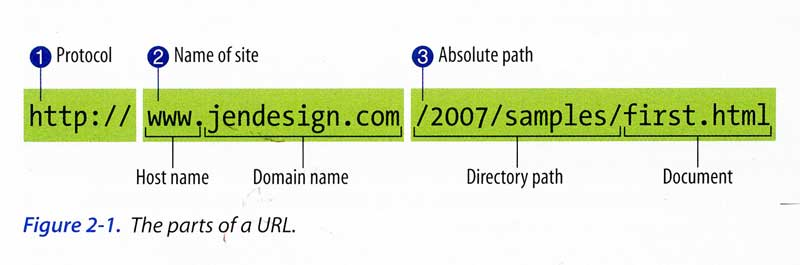
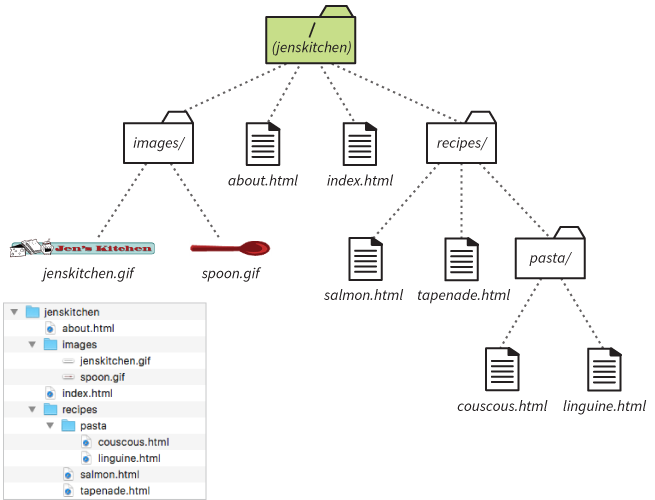
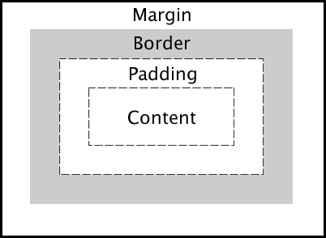

235 Midterm Notes
Common Web Professionals
- Information Architect - Organizes content/site diagrams
- Content Strategist - Makes sure content supports brand
- UX Designer - Makes site easier to use using UI/visual
- Graphic Designer - Creates logos, graphics, color, etc
- Frontend Developer - HTML, CSS, JavaScript
- Backend Developer - Server code, databases
- Full-Stack Developer - Does both
- Project Manager - Guides dev to meet business goals
- SEO Specialist - Search engine optimization
- Multimedia Producer - Sound, video, interactivity
Organization that oversees the web and who founded it
The World Wide Web Consortium (W3C), founded by Tim Berners Lee
Systems and technologies that get us connected to web servers
- Server - Apache, Microsoft IIS
- Database - MySQL, Oracle
- POP3/IMAP/SMTP - transferring/storing email
- FTP - Used to transfer files from machine to machine
- SSH - Provides secure shell for remote access
- HTTP - Powers the web, allows documents to be linked and served
Default file name that you should use for web pages
index.html
Common HTTP Status Codes
- 200 - OK
- 301 - Moved Permanently
- 404 - Not Found
- 500 - Internal Server Error
How the HTTP request/response cycle works
- Type in URL/Click a link in the browser
- Browser sends an HTTP request
- Server looks for/assembles the requested file and issues response header. Sends file if it found it.
- Browser parses document, images, stylesheets, contacts the server for each resource
- Browser assembles all of the images styles and script into web page
Graceful Degradation
Design a fully-enhanced experience first, then create fall-backs for non-supporting browsers
Progressive Enhancement
Start with baseline experience that makes core function available on simple browser, then layer on advanced features
Responsive Web Design
Idea is to serve up one single page to all users but have different style sheet rules based on screen size
different style sheet rules based on screen size
Phrase coined in 2010 by Ehthan Marcotte
Naming conventions for web documents
- No spaces in filenames
- Always end HTML filenames with .htm or .html and images with appropriate extension (.jpg .gif .png .svg)
- Consistently using lowercase
Parts of HTML Elements
Consists of content and the HTML markup that surrounds it
Elements that don’t have content are called empty or standalone elements
<div> - block container to group sections<span> - inline container to group sections
Semantic HTML Elements
<header><footer><section><main><figure>
Generic Elements
<div> and <span>- Attributes:
id (prefixed with #) and class (prefixed with .)
Document Object Model
DOM gives the document structure. Thought of as outline
Semantic Markup
Meaningful description of the content. Ex: using header instead of div
The User Agent Style Sheet
Built-in to all browsers, displays elements in a default style
Caching
Stores certain data so that future requests can be served faster
CSS Reset
Overrides browser defaults, makes presentation more predictable across browsers, prevents elements from inheriting unexpected styles
Absolute vs. Relative Links
Absolute: Provides full URL
Relative: Describes location of file relative to current document
Link to a Document Fragment
Add id attribute to target element with unique id
Make link by adding #idname to href in <a>
Example:
<h2 id="example"> - Add id to target element
<a href="#example">Example Link</a> - Make link
Compatible Image Formats
JPEG(raster), GIF(raster), PNG(raster,transparent), SVG(vector), WebP(raster)
Why we use alt text in image tags
- Required to validate
- Used by screen readers
- Useful for search engines
- Displays if images don't load
Bitmapped images
- Raster graphics
- Made up of pixels
- Cannot be resized without losing resolution
Places Where CSS Rules Can Be Applied
- Separate text document ending in .css (external)
- Put between <style> tags in <head> section (embedded)
CSS Units of Measure
- px - pixel (1/96 of an inch)
- vh - viewport height (1/100th of the current window height)
- rem - a root em (equal to the em size of the root element)
- em - equal to size of current font
- ex - equal to height of a lowercase “x” in current font
- vw - viewport width (1/100th of current window width)
- pt - a point (1/72 of an inch, used in print design)
CSS Selectors
- p - element selector
- p, ul, blockquote - grouped selectors
- p em - descendant selector
- #professor - ID selector
- li>a - Child selector
- h1+p - Next-sibling selector
- h1~h2 - Subsequent-sibling selector
- .group - Class selector
- * - Universal selector
ways to specify colors
- Black:
#000000 (hex), rgb(0,0,0) (rgb)
- White:
#FFF (shorthand hex), rgb(255,255,255) (rgb)
- Gray:
silver, rgb(128,128,128) (rgb)
Basic Types of Positioning
- static: Normal positioning
- relative: Moves element to new location and leaves old space as empty area
- absolute: Moves to spot related to the viewport or containing element, old space is closed up and has no influence on other elements
- fixed: Element is positioned in one spot (even if document scrolls) relative to viewport
- sticky: Combination allows element to scroll into a specific position relative to viewport at which point it remains fixed
Breakpoints
Use media queries to introduce style changes based on screen size
@media screen and (min-width: 850px) {}
CRAP Design Principles
- Contrast: Unique elements stand apart
- Repetition: Cohesiveness
- Alignment: Every element visually connected to another element
- Proximity: Related elements placed close together
The .htaccess File
Used for apache web server to configure details of website without altering server configuration files. Can be used to load custom error pages, create url redirects, and implement password authentication for specific directories
Parts of a URL

Site Design Process Steps
- Flexible Grid
- Flexible Images
- CSS media queries
- Viewport meta element
Types of Navigation
- Local: Subnavigation/page level
- Global: Main, primary navigation
- Embedded: Within the text itself, such as links
What is "the fold"?
Where the browser window ends but content continues (before scrolling)
Create a functional link tag
<img src="filepath.png" alt="alt text">
File Structure and Paths
In same folder: nameofpage.html
In folder below: folderbelow/nameofpage.html
In folder above: (2 folders above) ../../nameofpage.html
Root: start with /

- To get from tapenade to salmon: salmon.html
- To get from tapenade to couscous: pasta/couscous.html
- To get from linguine to about: ../../about.html
Parts of a CSS Style Rule
strong { color: red; font-style: italic; }
strong { color: red; font-style: italic; } - Style rule
strong - Selector
color:red; - Declaration
{ color: red; font-style: italic; } - Declaration block
color - Property
red - Value
Specifying a Preferred Font with font-family property
font-family: 'Open Sans', sans-serif;
Parts of CSS box model

Flexbox Containers
#container {
display: flex;
flex-direction: column;
flex-wrap: wrap;
}
Displays items vertically and wraps. You can also use row, row-reverse, nowrap, wrap-reverse to control the layout.
Grid Containers
.grid-container {
display: grid;
grid-template-columns: 1fr 1fr 1fr;
grid-template-rows: 1fr 1fr 1fr;
grid-template-areas: "title title title" "content content content" "footer footer footer";
}
.title { grid-area: title; }
Defines a 3x3 grid with title at the top, content in the middle, and footer at the bottom.
CSS ID and Class Selectors
ID - #idname {}
<h1 id="idname">
Class - .classname{}
<h1 class="classname">
Descendant Selector
selector1 selector2 {}
Ordered and Unordered Lists
Ordered - <ol></ol>
Unordered - <ul></ul>
List items are in <li> tags within
Link Styles
a:link{} - Normal unvisited
a:visited{} - Visited link
a:focus{} - When tabbed onto
a:hover{} - When hovered over
a:active{} - When being clicked
HTML Skeleton
<!DOCTYPE html>
<html lang="">
<head>
<title>Title</title>
</head>
<body>
</body>
</html>